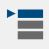
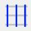

Im Panel der Benutzerparameter befindet sich im ersten Fenster Benutzerwerte der Eintrag „Aktiver Vorgang“. Daneben wird der vom Bediener aktivierte Vorgang angezeigt. Zum Hinzufügen, Ändern oder Löschen muss auf den danebenliegenden Stift geklickt werden; daraufhin öffnet sich dieses Fenster:

Schaltflächen der unteren Leiste
Schaltflächen für die allgemeine Macro-Verwaltung
 | Automatische Vorgänge aktivieren/deaktivieren |
 | Vorgänge verwalten |
Schaltflächen zur Verwaltung der Macro-Liste:
 | Hinzufügen |
 | Löschen |
Name ändern | |
 | Kopieren |
Schaltfläche zur Verwaltung des Inhalts einer einzelnen Macro:
Vorgang bearbeiten |
Vorgänge verwalten
Es öffnet sich das folgende Fenster. Hier kann für jeden der vier nachfolgend erläuterten Vorgangstypen (Standard, Bearbeitungen an den Anfang sortieren, Bearbeitungen ans Ende sortieren und Nach Schnitten sortieren) festgelegt werden, ob ein Vorgang aktiviert werden soll.

Vorgang hinzufügen
Es öffnet sich das folgende Fenster, in dem der Name für die neue Bearbeitung festgelegt werden kann:

Nach Bestätigung des Namens der neuen Macro wird diese im linken Panel hinzugefügt und ist zunächst leer:

Vorgang bearbeiten
Nachfolgend ist das Bearbeitungsfenster für den ausgewählten Vorgang dargestellt:

Schaltflächen ausgewählte Vorgänge
 | Nach Bearbeitung sortieren |
 | Standardvorgänge |
 | Bearbeitungen an den Anfang sortieren |
 | Bearbeitungen ans Ende sortieren |
 | Nach Schnitten sortieren |
Schaltflächen zur Vorgangsverwaltung
 | Vorgang hinzufügen/entfernen |
 | Sortierung verschieben |
Reihenfolge der Vorgänge umkehren (Optional)
Diese Option kann aktiviert werden, um die Reihenfolge der Vorgänge umzukehren.
Wenn beispielsweise folgende Vorgänge gedrückt werden:
Untere Schnitte zuerst
Außen nach innen
Linke Schnitte zuerst
Die tatsächliche Reihenfolge der Vorgänge ist:
Linke Schnitte zuerst
Außen nach innen
Untere Schnitte zuerst
Da die Positionen überschrieben werden, steht diese Option zur Verfügung, damit die Vorgänge in chronologischer Reihenfolge ausgeführt werden können.
Bei aktivierter Option ist die Reihenfolge der Vorgänge in diesem Fall daher:
Untere Schnitte zuerst
Außen nach innen
Linke Schnitte zuerst
Eine Macro aktivieren
Nachdem die Macro erstellt und wie gewünscht bearbeitet wurde, kann sie ausgewählt und aktiviert werden.
 | Macro aktivieren deaktiviert |
 | Macro aktivieren aktiviert |
 | Macro aktiviert |
Vorgehensweise zum Erstellen und Laden einer Macro
Als Erstes sicherstellen, dass die Aktivierungsschaltfläche auf ON eingestellt ist, damit anschließend die gewünschte Macro verwendet werden kann.
Anschließend einen neuen Vorgang erstellen und einen Namen festlegen. Danach auf den neuen, nun in der Liste sichtbaren Vorgang und unmittelbar anschließend auf die Bearbeitungsschaltfläche rechts im Panel klicken, um das Panel zum Bearbeiten der Macro zu öffnen.
Für jeden Vorgangstyp die gewünschten Vorgänge aus der linken Liste (Verfügbar) auswählen und zur Liste der ausgewählten Vorgänge hinzufügen. Anschließend die Konfiguration bestätigen, um sie im Vorgangspanel anzuzeigen und zu verwalten.
Die Macro kann geladen werden, indem die Schaltfläche direkt rechts neben dem Macro-Namen angeklickt wird.
Nachfolgend ist ein Beispiel der Macro „operazione_1“ dargestellt. Sie enthält 3 rechts sichtbare Vorgänge und ist grün mit dem entsprechenden Symbol hervorgehoben, da ihr Status „geladen“ ist.
Als Erstes sicherstellen, dass die Aktivierungsschaltfläche auf ON eingestellt ist; dies ist Voraussetzung für die Verwendung der gewünschten Macro. Nach der Aktivierung wird ein neuer Vorgang erstellt und mit einem eindeutigen Namen versehen. Nach der Erstellung erscheint der Vorgang in der Liste: Er muss ausgewählt und anschließend die Bearbeitungsschaltfläche rechts im Panel angeklickt werden, um die Konfigurationsoberfläche der Macro zu öffnen.
In dieser Oberfläche können für jeden Vorgangstyp die gewünschten Elemente aus der linken Liste („Verfügbar“) ausgewählt und zur rechten Liste der ausgewählten Vorgänge hinzugefügt werden. Nach Abschluss der Auswahl genügt es, die Konfiguration zu bestätigen, damit sie im Vorgangspanel angezeigt und verwaltet werden kann.
Die Macro kann über die entsprechende Schaltfläche direkt rechts neben ihrem Namen geladen werden. Als Beispiel dient die Macro „operazione_1“: Sie umfasst drei Vorgänge, die im rechten Panel angezeigt werden, und ist grün mit dem entsprechenden Symbol hervorgehoben, das den Status „geladen“ anzeigt.